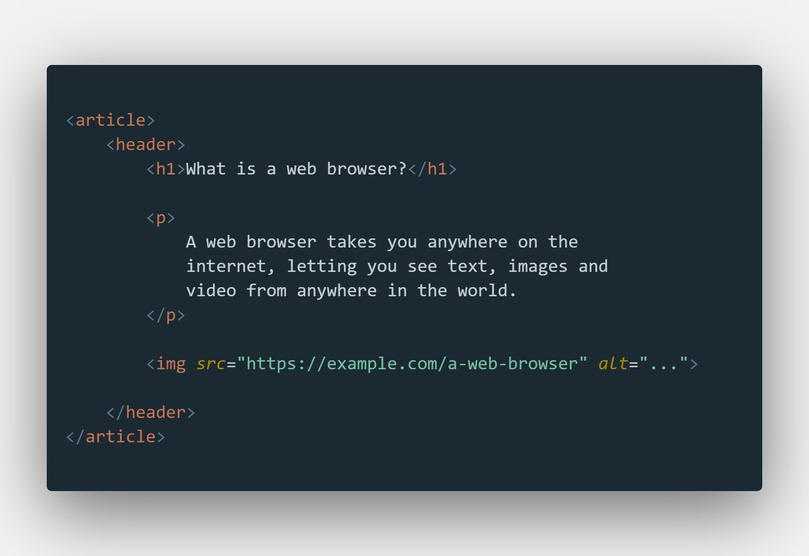

<header> Elementi
<header> elementi bir döküman ya da bir kısım (section) için bir başlık belirtir.
<header> elementi içerdiği içeriği kapsayıcı olmalıdır.
Bir dökümanda bir kereden fazla kullanılabilir.
Bir <header> elementi şunları içerebilir:
- bir ya da daha fazla başlık elementi (<h1> - <h6>)
- logo ya da icon
- yazar bilgileri
Aşağıdaki örnek bir makale (article) için bir başlık (header) içerir:
